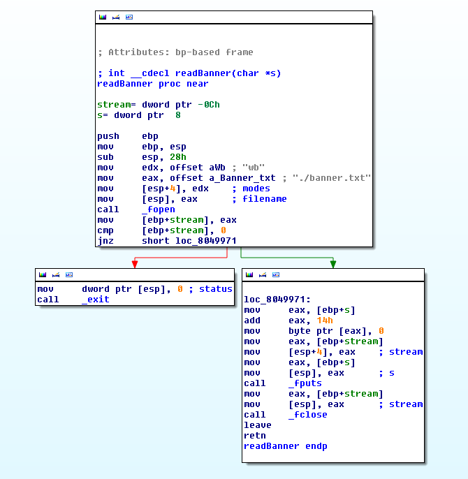
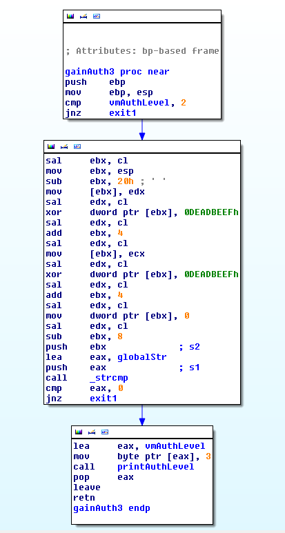
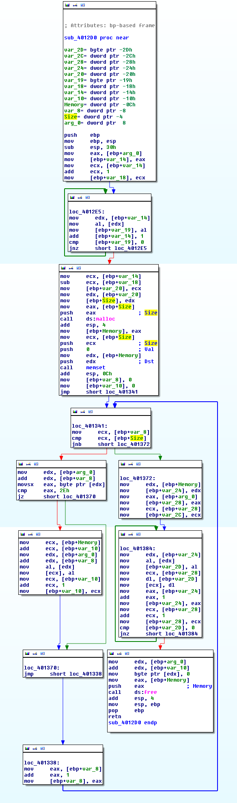
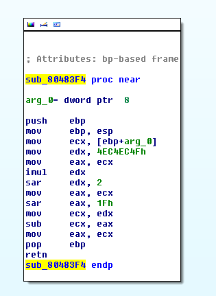

Question 1: Reverse this back into C and describe what it does.

Question 2: Reverse this back into C and describe what it does. Why do you think there are the 'sal' instructions?

Question 3: Reverse this back into C and describe what it does.

Question 4: Reverse this back into C and describe what it does.
